光天化日之下
在廢棄的空屋裡睡覺，迷迷糊糊睡睡醒醒，睡得還算不錯。
夜裡有人停車到屋旁上廁所，走路的聲音驚醒了我，從帳篷裡面坐起身來打量外頭的情況，只看到一個黑影在小便。
他發現空屋裡頭有人的反應比我還更嚇一跳，互相嚇來嚇去的真不好玩，把握時間多睡一點吧。
露營有幾個好處，比如說睡前我不用撐著眼皮在那邊寫遊記，不用洗澡、洗衣服，當日花費很省，很有成就感。
早上鬧鐘響的時候，路旁駛過的車輛居然連帶有捲起水花的聲音，昨天晚上又下了雨，幸好天亮的時候就停了。
但是雨雲還是盤踞在空中，八點多的時候應該是旭日東昇，但看起來則像是永遠的黎明。
早上到中午這段時間氣溫都在二十度，然後慢慢向上升溫，本來覺得會冷，但現在都很珍惜這段涼快的時間，騎車超級舒服的。

從M5轉換跑道到M7的效益彰顯出來了，今天再度看到通往莫斯科的指示牌，距離只剩下一千三百多公里，瞬間減少了三百公里的路程。
很有賺到的感覺，但這段路比較多在山裡繞來繞去，希望到時候我還會覺得選擇M7是正確的。
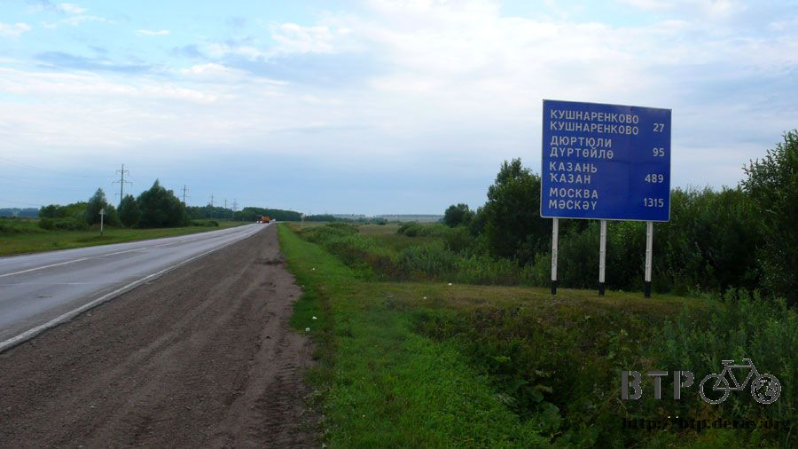
俄羅斯的農作物還蠻多樣的，像這個白色的小花也是種了很多，農村的自家後院也會種這個，但不知道是啥米？
這片白色的花海，配合今天早上陰涼的氣氛，穿越花海之後該不會就是冥界了吧~_~
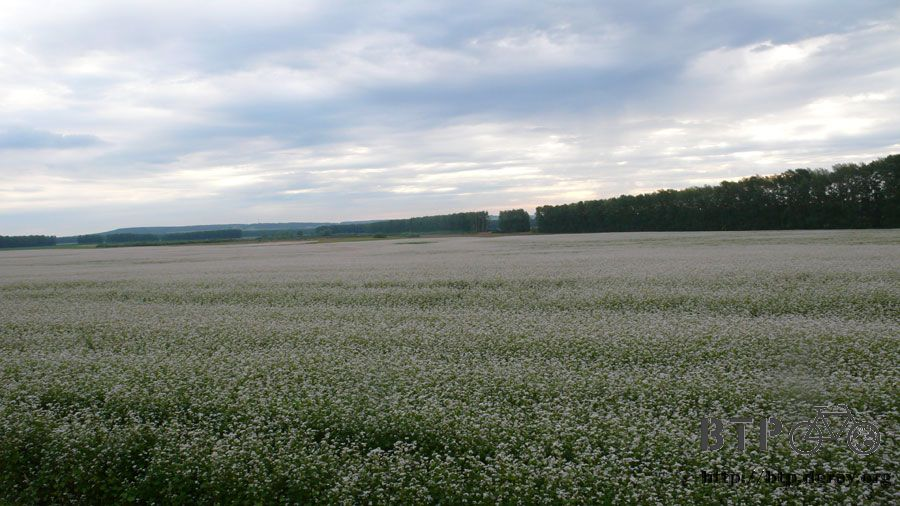
從離開空屋之後就在期待餐廳的出現，只要省下住宿的費用，那麼隔天就會讓自己吃好一點當作獎勵。
早上將近十點的時候總算讓我發現了一間挺大的餐廳，裡面還兼書報攤。

書報攤的正前方就是洗手檯，昨天沒有洗澡的緣故，連臉都是用微濕的毛巾隨便擦兩下就當洗乾淨了。
看到水龍頭很開心，如果四下無人的話就可以在這邊洗個澡，可惜一位小姐就坐在我眼前。
但是能夠將臉好好的洗乾淨，也算是很舒暢了，順便沾濕毛巾到外頭去意思意思擦一下身體，不知道是心理作用還是真的髒，到處都覺得癢癢的。
為什麼說他是間大餐廳呢？光是看裡面的桌椅數量就很驚人，點餐區也是自助式的，用眼睛就能知道有賣什麼好料。
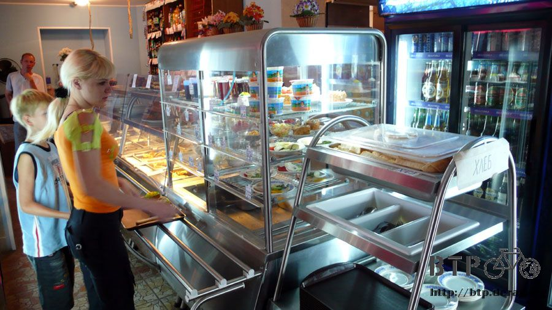
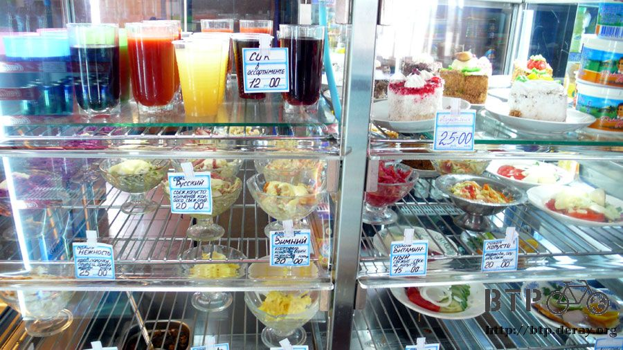
終於可以讓我輕鬆的點餐，不用看著俄文菜單比手畫腳，剛到的時候只先點了一杯熱紅茶，消費還附贈一盒火柴。

剛剛說到露營的好處是睡前不用寫遊記，但是睡醒之後還是得找時間補寫，不用洗澡跟洗衣服的後果也得自己承擔。
找張餐桌坐下來，眼光還可以看到放在外面的小多，換個心境喝熱紅茶裝優雅，改當小作家。
遊記整理得差不多之後才去點了正餐來吃，這時候差不多是中午，早午餐一起解決。
吃的是大隻的烤雞腿配上麵條跟蔬果，還有很多料跟肉塊的雞湯麵，又附贈了兩盒火柴。

想到騎車在路上的時候，很多人都會跟我要菸來抽，尤其是工人、牧民或是路旁攔便車的。
當然我都搖頭說沒有香菸，想過幾次要不要順便就買一包菸放在身上，可以沿路分給向我要菸的人，但是我自己又不抽，幹嘛白花這個錢。
整理遊記加上吃飯，離開餐廳的時候就已經下午一點了，看到時間這麼晚自己還嚇一跳，涼快的騎車時光就這麼消失。
外面氣溫已經回升到三十度，雲層沒有早上那麼濃密，太陽也露臉，這時候就很後悔穿厚的排汗衣，真是汗流不止呀～
離開餐廳後騎了一個小時，覺得騎乘時有異樣的搖晃感，後輪會突然軟掉然後偏移一下，不太明顯但真的有感覺。
本來想說沒關係，可是連續幾次大卡車經過我的時候，搖晃得厲害差點跌倒，為了安全起見還是去公車站檢查一下。
小小的公車站長滿的雜草，正好有屋頂可以讓我擋太陽。

早上出發的時候檢查輪胎氣明明還是飽的，現在卻可以輕鬆的捏下去，重新打飽氣，過了三分鐘之後又慢慢的軟掉。
很明顯，是破了一個小小的洞，輪胎的氣一點一點的跑掉，簡單講就是爆胎啦。
好～久～沒有爆胎了，上次爆胎距今已有六十二天，整整兩個月的時間都沒有爆胎，我都已經忘了輪胎是會爆的。
更換內胎的時候發現是被一塊小小的碎石頭給刺破的，碎石頭並不尖銳，它之所以可以刺破外胎是因為之前這裡有一個被鋼絲刺破的洞。
就這麼的巧合，千萬分之一的機率，同樣一個洞跑進一片碎石頭，然後又爆胎了。
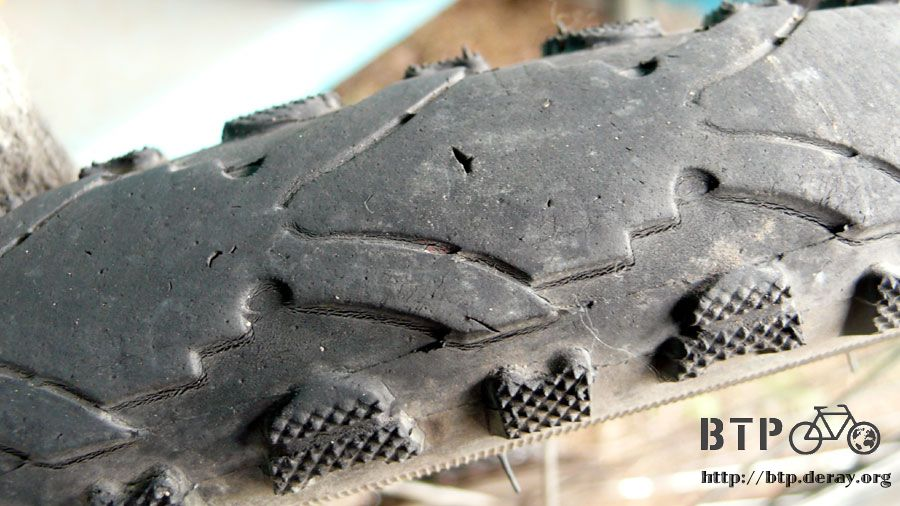
觀察一下外胎的情形，外胎上佈滿著小小的細孔，紋路也有淺淺龜裂的痕跡，輪胎表面看起來磨損還不算太嚴重。
這條外胎已經騎了超過九千公里，老早就超過一條外胎的壽命，明明包包裡有六條新的外胎，還是打算繼續騎到莫斯科再說。
沿路上，大家都種小麥，收成的快慢則各有不同，有的還在青翠的長大中。
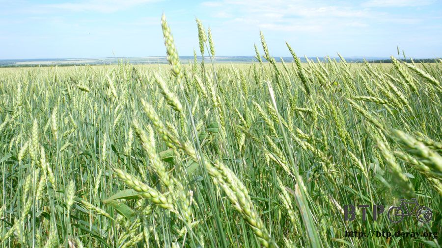
有的則已經變成黃澄澄的小麥田，等著被收割，小麥田裡都混著長了一些奇怪的東西，比如說向日葵，大概是之前種來當肥料的時後遺留下的種子重新發芽。
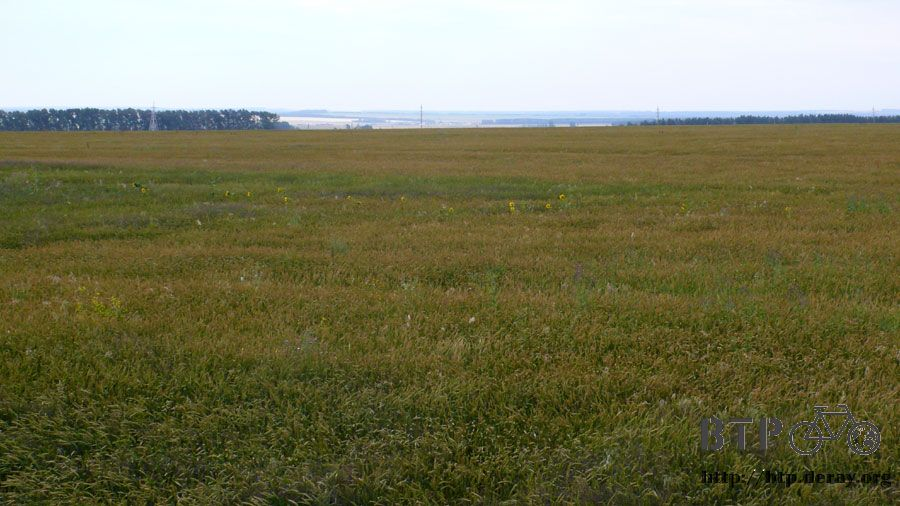
有的則已經收割完畢，變成一堆一堆的麥梗堆，我蠻好奇這些還能有什麼經濟價值。

撿帽子，一整天下來至少要撿十次帽子，大風揚起、卡車疾駛而過都會讓帽子飛走。
回頭撿的時候還要小心後面繼續開來的車輛，有時候帽子飛到對向車道那更慘，撿帽子跟大冒險沒兩樣，都是搏命在進行。
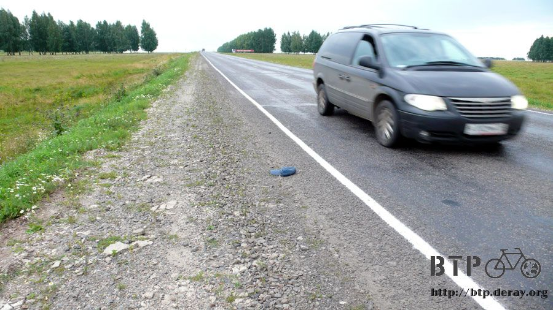
這裡也有油田的散佈，但是採油的規模不大，小小的鑽油機隨處可見，農田裡、路旁，默默的挖掘著油礦。
因為這裡還沒有什麼工廠或是輸油管，猜想這些鑽油機都是農夫們的投資，買個幾台放到田裡去鑽油，要是真的鑽到油了，那這輩子就不用再種田了。
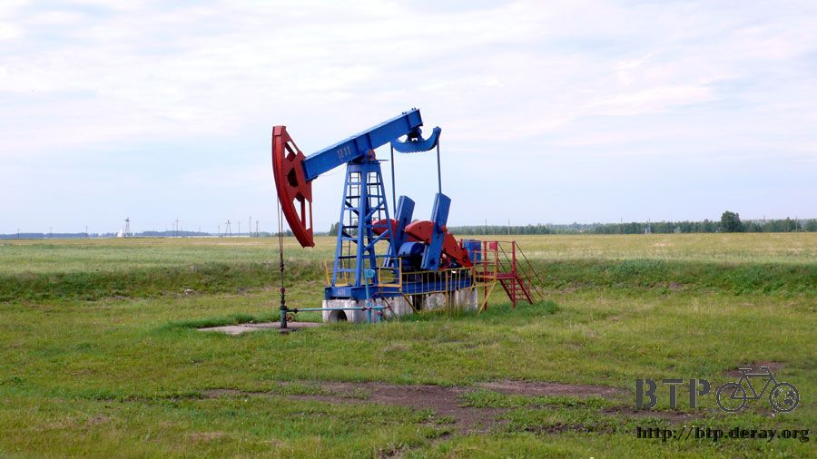
下午六點多到加油站休息片刻，買了果汁放著當備用飲品，今天也不打算住旅館，等放一晚上明天睡醒就可以喝冰的果汁。
我遇到的俄羅斯人都好親切，跟我想像中的冷漠面孔完全不一樣，常常都被抓著一起聊天，感覺很開心。
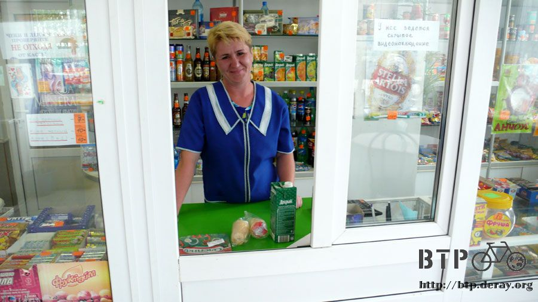
沿路上經過的小鎮不算少，期待著會有商店或是餐廳的出現。要離開大馬路才能進入的小鎮會有商店的機會都不高，
而這種延著大馬路建立的小鎮機會則高一點，一路穿越整個鎮上，居然也是什麼都沒有，百分之百純正住宅區。

又騎了一段路，在什麼都沒有的郊區反而會出現加油站和餐廳，有點奇怪的分佈邏輯。
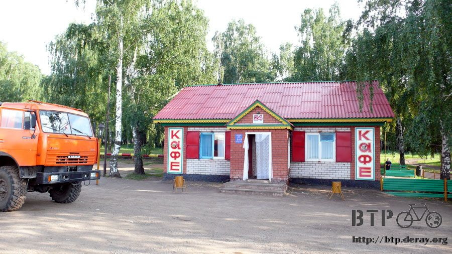
一到餐廳第一件事情不是點餐或是買喝的，看到餐廳外面有一個大水桶，水龍頭流出冰涼的水，我看到了解決身上癢癢的藥方，洗澡。
大水桶設在餐廳旁邊，這裡停滿了來用餐的大卡車，進出的人也是絡繹不絕，但是我好想洗個澡呀。

拋開羞恥心，脫掉頭巾、上衣、褲子，只穿一條四角褲，拎著毛巾，開始在光天化日之下擦澡。
一開始覺得有點難為情，但是等到冰涼的毛巾舒服的擦過身上，將汗漬和髒污洗掉的瞬間，難為情根本就不算什麼，洗澡好舒服呀！
順便蹲在地上洗了頭，發現一個驚人的事實，還記得前兩天住在旅館躲雨，白天覺得頭昏昏的，還以為是感冒。
洗頭的時候摸到頭皮上都是結痂的血塊，原來我在旅館住的時候撞到頭，那時候覺得應該沒事，都已經頭破血流了還沒事？@@"
頭會昏沉沉的大概就是撞到輕微腦震盪了，隔天睡醒的時候覺得好多了，
我還想說自己對於感冒的抵抗力還真是好，應該修正為對撞到頭的復原力真是好才對。

全身都擦洗乾淨，什麼羞不羞恥根本就是我一個人在胡思亂想，沒有任何路人因為我在這邊洗澡而感到驚訝或是反感。
舒舒服服的進去餐廳用餐，點餐的時候我看著餐桌上的杯盤狼藉，剩下骨頭和空碗，跟店員說這些盤子的東西我都要來一份。
而還原之後的時候就是這份大餐啦，烤雞腿、肉醬通心麵、馬鈴薯胡蘿蔔玉米湯、麵包和奶茶，全部都來一份讓我吃的好撐好撐。

餐廳是二十四小時營業，想嘗試一整個晚上窩在人家店裡面，但這樣會不會太麻煩別人？
要是有人還在店裡的話，那夜間顧店的人就不能利用空檔睡覺，得顧著我會不會亂搞些什麼。
利用店裡的電力將遊記整理好，今天晚上打算就睡在餐廳旁邊的露天坐椅，可是這裡看起來不是很好的露營地點。
太空曠、一眼就被發現、而且下雨的話肯定還是會被淋濕。
老闆娘則是因為安全的考量不建議我睡在那裏，因為店裡賣酒，晚上很多人會來喝酒，怕喝醉的人會鬧事。
這麼看來睡在露天座椅的確不是個好主意，牽著小多尋覓過夜處，在圍籬圈起來的電力設施裡頭有一張鐵架子看起來很像床。
裡面的雜草也不至於茂盛到會淹沒我，避免不了的是蚊蟲數量極多，相當恐怖。
鐵架子看起來還蠻好睡的，雖然長度不太夠，腳要曲起來才行，鋪上充氣的睡墊應該能讓躺著的感覺好很多，這樣也不用睡在泥土地上。
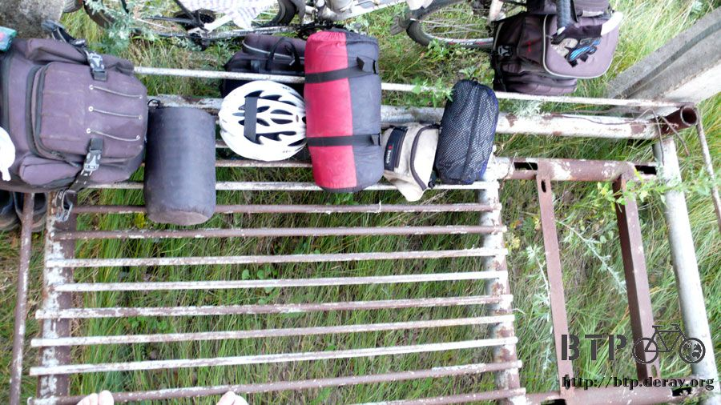
有著圍籬的遮擋，從外面完全看不到裡頭的動靜，安全的顧慮已經解除。
比較有問題的是這邊沒有屋頂，手錶又顯示下雨的圖示，要是夜間下雨的話那就精采了，默默的祈禱今晚是好天氣。
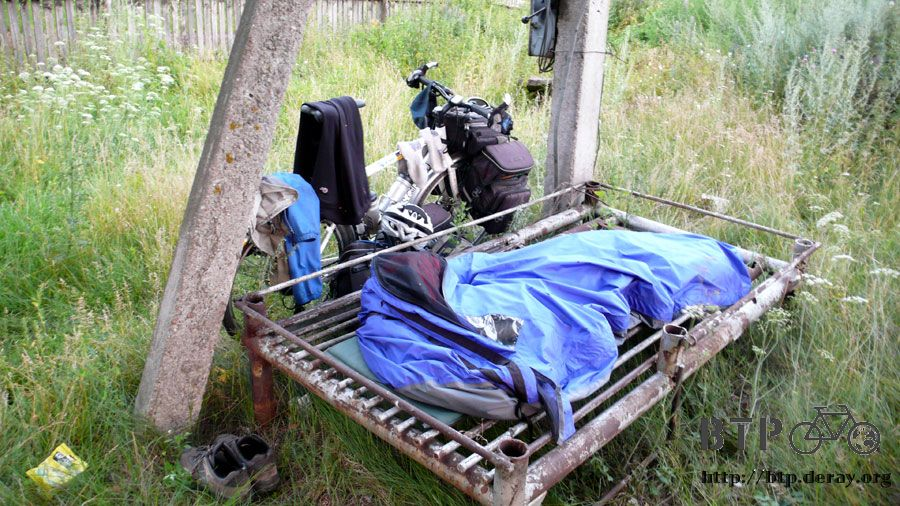
這大概是晚上睡覺最接近大自然的一次，四周全都是蟲鳴，上下左右前後都是，360度立體聲在播放著夜間的安眠曲。
真的如同餐廳老闆娘所說的，晚上會有人來喝酒，凌晨一直有人開著車，車內電子音樂大聲到可以叫醒全村的人，還好沒將自己暴露在他們的視線內。
今晚睡的不是說很好，因為在擔心萬一夜間下雨的話該怎麼辦？
一遍又一遍的在腦海裡排練應變措施，先搶救包包跟小多到餐廳的屋簷下，然後再回頭來拿睡袋跟帳篷。
就是因為一直這樣想著下雨的事情，晚上入睡之後才會夢到下雨了，結果只是夜間的冰冷霧氣加上風吹過樹葉的沙沙聲。
很幸運的並沒有下雨，但我卻因為擔心下雨而沒能好好睡上一覺。
繼續閱讀：7.28 盧布沒有
俄羅斯-盧布－ 1：1.3 台幣
7.27 |
總計：310元 |
午餐熱紅茶、雞腿麵、肉湯135元、加油站柳丁汁、冰淇淋55元、晚餐烤雞腿、通心麵、玉米湯、麵包、奶茶120元 |
|